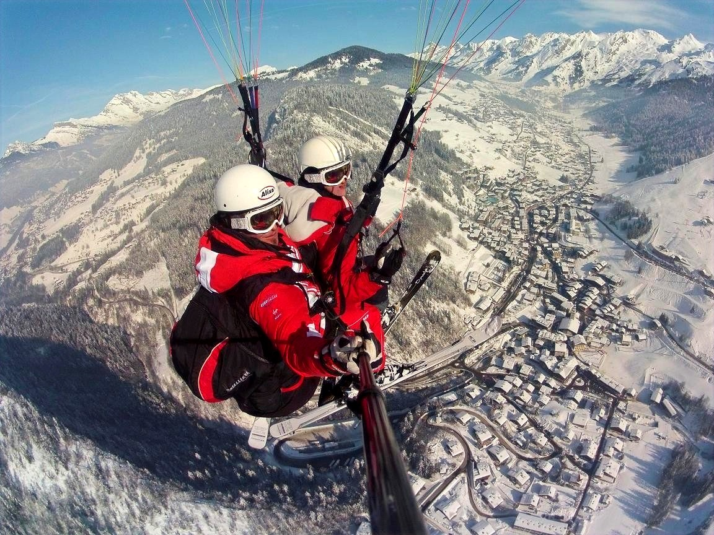

Vol Beauregard : baptême de parapente d'hiver accessible à tous à La Clusaz

Vol Beauregard hiver — 70€
Vivez votre premier vol en parapente au départ d'un sommet enneigé, accessible à ski, en snowboard ou à pied, dès le niveau débutant. Ce vol d'hiver est ouvert aux enfants comme aux adultes, pour un premier envol tout en douceur au-dessus des paysages enneigés de La Clusaz et des Aravis.
- Prix : 70€
- Durée du vol : 5 à 10 minutes
- Accès : à ski, en snowboard ou à pied
- Public : enfants et adultes ; skieurs dès le niveau débutant, snowboarders de bon niveau, ou piétons
- Rendez-vous : sommet de la télécabine de Beauregard, à droite en sortant (pancarte et bancs)
- Période : hiver uniquement
- Moment de la journée : matin et après-midi
- Option : photos et vidéo (25€)
Paiement sur place ou par chèque (encaissé après le vol).
Comment se déroule le vol Beauregard ?
- Rendez-vous : nous fixons ensemble l'heure de rendez-vous lors de la confirmation du vol, selon la météo. Rendez-vous au sommet de la télécabine de Beauregard, à droite en sortant, au niveau de notre pancarte et des bancs.
- Préparation : votre moniteur, diplômé d'État, vous fait un petit briefing sur le vol, vous équipe et vous explique simplement le décollage. Pas besoin d'expérience : quelques consignes suffisent.
- Décollage : quelques pas ou quelques mètres de glisse dans la pente, la voile se gonfle et vous quittez le sol en douceur.
- Le vol : 5 à 10 minutes au-dessus de La Clusaz enneigée, face à la chaîne des Aravis. Votre moniteur pilote, vous profitez du paysage.
- L'atterrissage : un retour au sol en douceur, et le souvenir de votre premier vol.
Pour qui est le vol Beauregard ?
C'est notre vol d'hiver le plus accessible au départ d'un sommet : pas besoin d'être un bon skieur, ni même de skier. Skieurs débutants, snowboarders de bon niveau (comme pour prendre un téléski !) ou piétons, enfants comme adultes, tout le monde peut profiter d'un premier vol au-dessus de la station. C'est aussi une belle idée de cadeau pour toute la famille.
Envie d'autre chose ? Les skieurs peuvent tester le vol L'Aiglon, un décollage à ski avec vidéo offerte, ou viser plus de dénivelé avec le Crêt du Loup ou l'Aiguille.
Que prévoir pour votre vol ?
- Une tenue chaude : veste, gants, bonnet et lunettes de soleil
- De bonnes chaussures fermées si vous venez à pied, ou votre équipement de ski ou de snowboard
- Un peu de souplesse sur l'horaire : le créneau peut être ajusté selon la météo du jour
Questions fréquentes sur le vol Beauregard
Faut-il savoir skier ?
Non. Le vol Beauregard est accessible à pied, ou à ski dès le niveau débutant. En snowboard, il faut en revanche un bon niveau, comme pour prendre un téléski.
À partir de quel âge peut-on voler ?
Les enfants peuvent voler à partir d'environ 20 kg, selon leur motivation et les conditions météo.
Peut-on avoir la vidéo du vol ?
Oui, avec l'option photos et vidéo à 25€.
Que se passe-t-il en cas de mauvais temps ?
Si le vent, la visibilité ou les conditions ne permettent pas de voler en sécurité, le vol est reporté ou annulé. Nous vous recontactons pour trouver un autre créneau.
Peut-on offrir ce vol ?
Oui, le bon cadeau du vol Beauregard est téléchargeable en PDF, prêt à imprimer.
Volez virtuellement au-dessus des Aravis
En attendant votre vol, découvrez le massif dans notre jeu 3D de parapente gratuit. Le jeu est une fiction qui ne reflète pas le vol réel.
Voir toutes nos formules
Découvrez l'ensemble de nos baptêmes de parapente biplace, été comme hiver, sur notre page Vols / Bon cadeau, ou contactez-nous directement pour être conseillé sur la formule la plus adaptée : Sam Porret, 06 88 07 04 72 ou Julien Wirtz, 06 82 95 85 42.